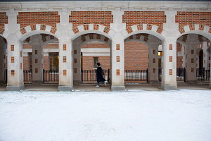
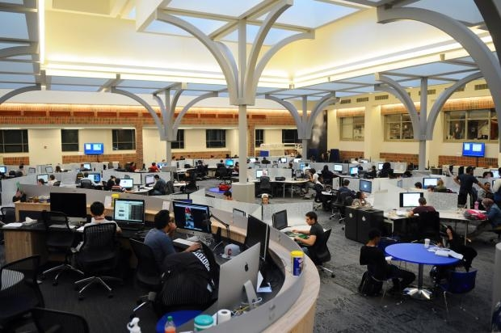

UMSI Academic Complex- North Quad
North Quad is the most convenient study space where you can directly access UMSI resources. Whether you are planning to attend the office hour or organizing a study group discussion, North Quad is definitely your top choice. Most of the professors have their offices on the 3rd and 4th floor. There is a lot of study spaces at the basement. Also, most of the SI class discussions are located at North Quad. Isn't that so convenient?
Other Study Spaces
Besides North Quad, there is a lot of other study spaces that suit your study style.
Law Library
The Law Library is definitely one of the iconic landmarks of UMich. If you love to study in a quiet space. This is for you!
Michigan Union

Michigan Union is a study space where you can stay and study during your lunch break while you grab food at the restaurants inside.
Shapiro Library

Looking for a real library? Shapiro offers computers and books. As well as common study spaces and quiet study spaces.
Fish Bowl
Fish Bowl is where a lot of tech people study. Computers and printers are available.
While there are so many options to choose from, remember to look at the opening hours and discover your ideal study environment!